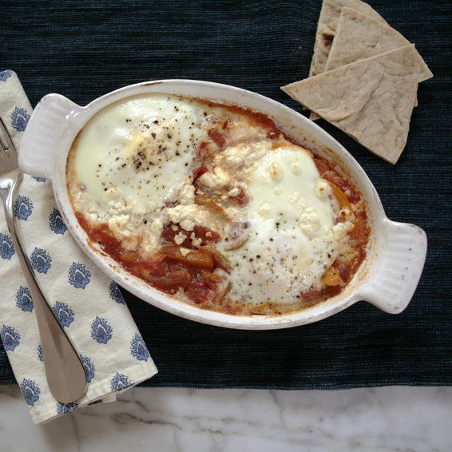

Easy Egg Recipe

Baked Eggs With Feta And Tomato Sauce
Prep time
20mins
cook time
20 mins
Total time
40 mins
SERVES: 2 big appetites
Ingredients
1/2 sm yellow or orange bell pepper, seeded and thinly sliced
1/2 yellow onion, thinly sliced
1 15-oz can diced fire-roasted tomatoes with garlic
2 oz crumbled feta
4 lg eggs
Directions:
PREHEAT oven to 375°F. Place 2 small, shallow baking dishes on a rimmed baking sheet.
WARM 1 Tbsp olive oil in an 8-inch skillet over medium heat.
ADD bell pepper and onion. Sprinkle with salt and pepper and cook, stirring, until tender, about 6 minutes.
ADD tomatoes and simmer 3 minutes until slightly thickened; distribute between baking dishes.
SPRINKLE feta on each (about 2 Tbsp per dish), then gently crack 2 eggs into each. Place baking sheet with dishes in oven. Cook about 15 minutes, until whites are just set.
Serve Hot. Enjoy!
NUTRITION
(per serving) 238 cal, 11 g pro, 15 g carb, 3 g fiber, 10 g sugars, 14.5 g fat, 4.5 g sat fat, 851 mg sodium